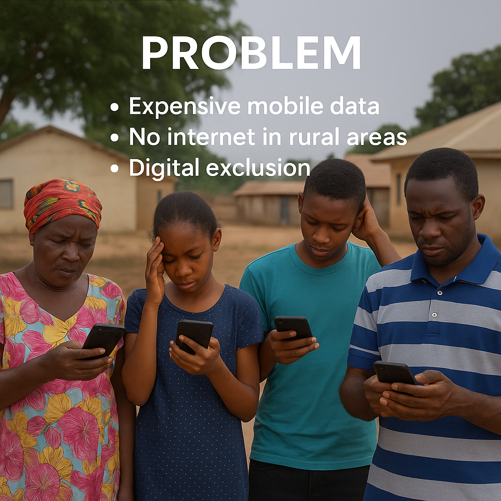
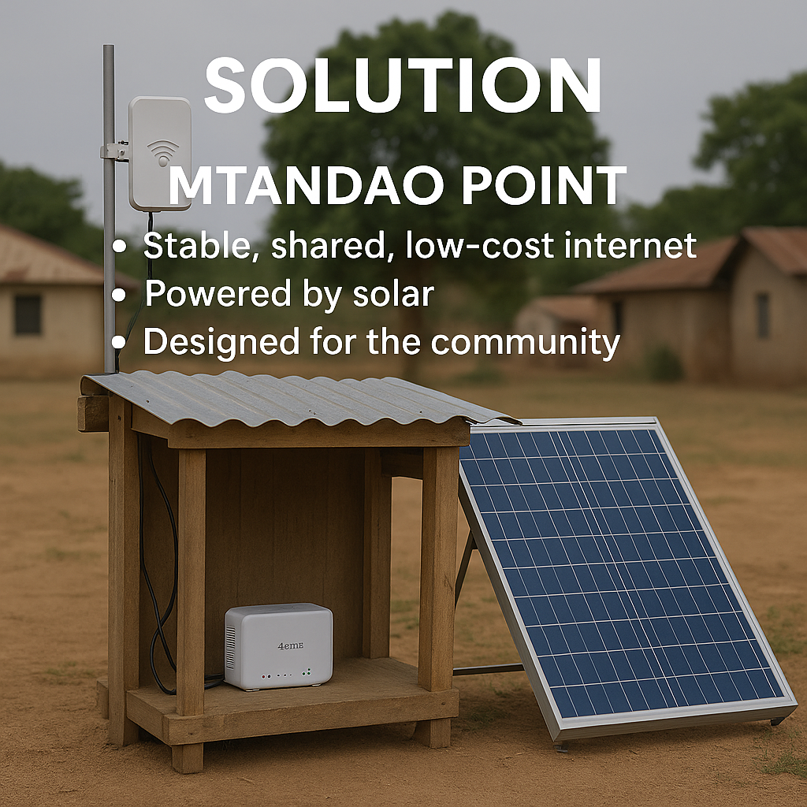
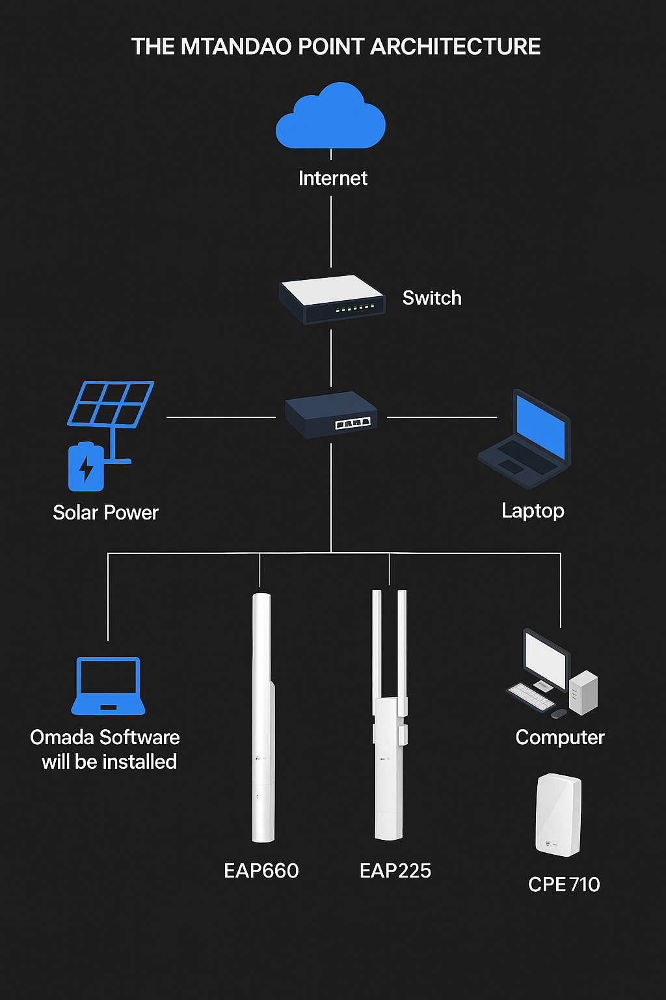

Project Photo Gallery
Visual documentation of the Mtandao Point setup, deployment, and real users accessing the network.


.jpg)
.jpg)
.jpg)
.jpg)
Bridging Connectivity in the Citiverse
Empowering communities with inclusive access to digital public infrastructure
In many rural and underserved urban regions, limited access to reliable internet and digital public services creates a digital divide. Citizens are unable to access e-learning platforms, virtual healthcare, online identity services, or participate in digital governance, which is essential in the evolving citiverse. This lack of access hinders development, inclusion, and resilience in communities.
Mtandao Point is a working prototype that demonstrates how digital public infrastructure (DPI) can be brought to underserved areas via a solar-powered, portable internet access point. The system uses TP-Link devices and a router to distribute managed connectivity, enabling access to e-governance, health, and educational services.
Adaptable for urban, rural, or remote deployment using TP-Link wireless devices and a simple router setup.
Manages user access, bandwidth limits, and provides analytics through the TP-Link portal.
Powered by solar panels and batteries to ensure sustainability and operation in off-grid areas.
Supports diverse users—students, health workers, and citizens—with offline fallback and local caching.
Try out a sample connection or view how the TP-Link Omada portal manages connected users and bandwidth.
View DemoThe current Mtandao Point setup uses the following equipment:
This simple setup is low-cost, easy to maintain, and scalable to multiple points across a region.
Visual documentation of the Mtandao Point setup, deployment, and real users accessing the network.
As outlined in our Concept Note, Mtandao Point is designed to be a digital gateway in the citiverse—extending connectivity, enabling real-time public service access, and reinforcing digital sovereignty at the community level. The platform embraces openness, decentralization, and sustainability as guiding principles.